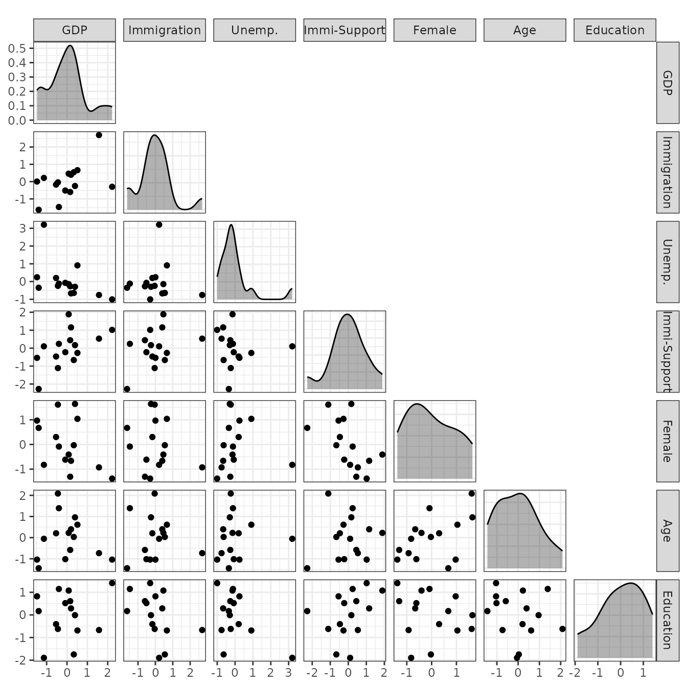
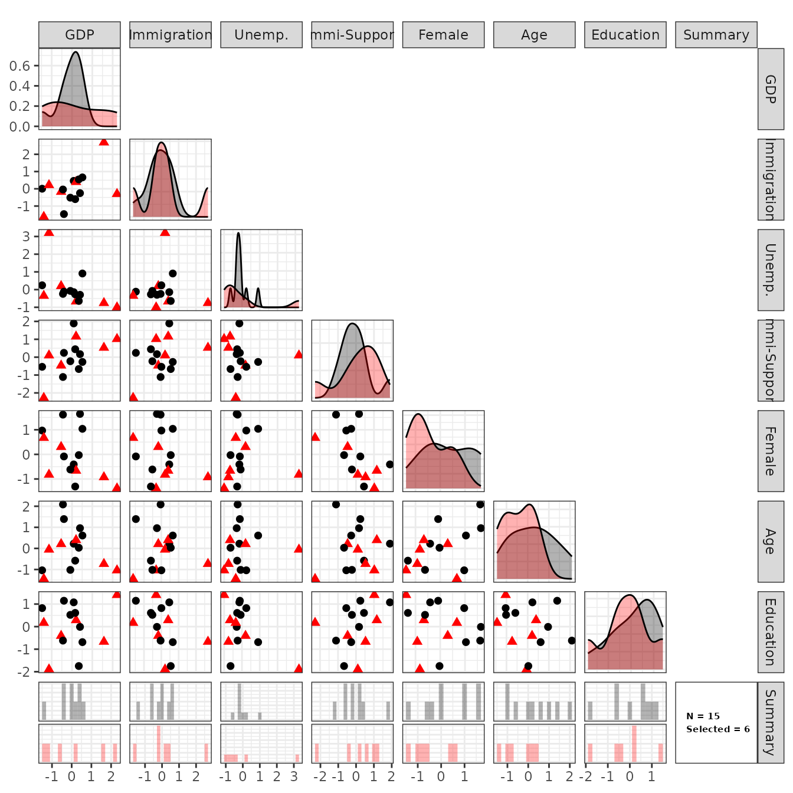

Introduction to sps
intro.RmdOverview
On this page, we provide the introduction to sps package
(5 minute read).
Specifically, we explain the two main functions.
sps: Synthetic Purposive Sampling to select study sites for multi-site causal studies.sps_estimator: Synthetic Purposive Sampling Estimator to estimate the average-site average treatment effect (ATEs) from multi-site causal studies.
sps: Site Selection
We use a multi-country survey experiment on attitudes toward immigrants (Naumann et al, 2018) as an example here.
In this example, we define 15 European countries as the population of sites. As site-level variables, we consider 7 variables discussed in the original paper: GDP, size of migrant population, unemployment rates, general support for immigration, the proportion of females, the mean age, and the mean income.
## [1] 15 7In practice, it is recommended to standardize each variable to make the scale of site-level variables comparable. That is, each variable has the mean zero and the standard deviation one.
## GDP Immigration Unemp. Immi-Support Female Age Education
## NL 0.393 -0.252 -0.294 0.169 1.643 0.961 -0.011
## SE 0.083 0.460 -0.144 1.888 -0.408 0.224 1.077
## NO 2.214 -0.299 -1.003 1.018 -1.381 -1.038 1.405
## FR -0.537 -0.173 0.201 -0.466 0.302 0.207 -0.407
## DE 0.198 0.397 -0.667 1.158 -0.661 0.396 0.288
## BE -0.084 -0.515 -0.074 -0.226 -0.615 -1.019 0.522Users can use sps_plot() to visualize the distribution
of site-level variables before site selection.
sps_plot(X = X_Imm, before_selection = TRUE)
We can then use sps to select diverse sites from the
population of sites. We will select 6 sites from 15 European countries
in this example.1 We start with the basic version of
sps and illustrate refinements on different pages (e.g.,
the stratified SPS).
out <- sps(X = X_Imm, N_s = 6)In this example, sps selected the following 6 sites.
out$selected_sites## [1] "NO" "FR" "DE" "ES" "CH" "CZ"Users can investigate the selected sites visually. Red triangles represent selected sites and black circles represent non-selected sites. In the last row and the diagonal plots, users can see the marginal distribution of each variable. All the remaining figures in the middle show bivariate relationships between two variables.
We can see that selected sites successfully cover a wide range of values in each site-level variable.
sps_plot(out)
If necessary, users can refine site selection using stratification to make sure selected sites satisfy certain conditions. This stratification can help users to incorporate various practical, logistical, and ethical constraints. Please see AAA.
sps_estimator: Estimate the Average-Site ATE
We focus on a multi-site causal study where where researchers have
(experimental or observational) identification strategies for internal
validity within each site and researchers compare results across sites
for external validity. sps_estimator will aggregate
site-specific ATE estimates to estimate the average-site ATE.
Here, we use experimental estimates in selected 6 sites from Naumann et al (2018). Users only need to obtain point estimates and standard errors of the average treatment effects (ATEs) in each site.
data("exp_estimate_Imm_selected")
exp_estimate_Imm_selected## Estimate se
## NO 0.2685040 0.02555942
## FR 0.2751970 0.02201039
## DE 0.3362153 0.01635270
## ES 0.2831690 0.02368973
## CH 0.2857338 0.02715871
## CZ 0.2210802 0.01993582We then aggregate these site-specific ATEs in selected sites to estimate the average-site ATE.
sps_est <- sps_estimator(out = out, estimates_selected = exp_estimate_Imm_selected)
summary(sps_est)##
## Estimate Std. Error CI Lower CI Upper p value
## 0.2816856 0.0178333 0.246733 0.3166383 0 ***
## ---
## Signif. codes: 0 '***' 0.001 '**' 0.01 '*' 0.05 '.' 0.1 ' ' 1Finally, users can use site-level cross-validation to assess the influence of unobserved moderators. In particular, users can randomly choose half of the selected sites as if they were unobserved non-selected sites and predict the average ATE of those non-selected sites based on the remaining selected sites. The null hypothesis is that the predicted ATEs are the same as the observed ATEs.
sps_cv_out <- sps_cv(out = out, estimates_selected = exp_estimate_Imm_selected)
round(sps_cv_out$p_value, 2)## [1] 0.97In this example, an estimated p-value is 0.97, and we do not find evidence for the bias due to unobserved moderators.